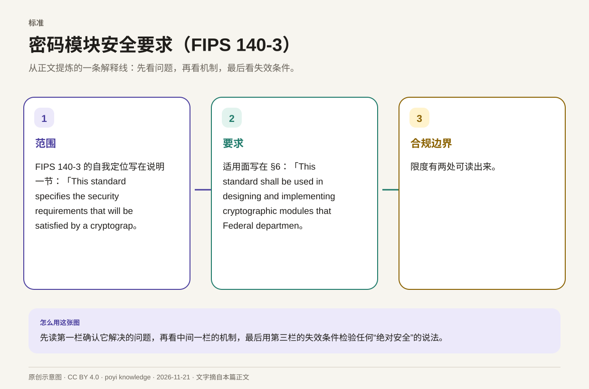
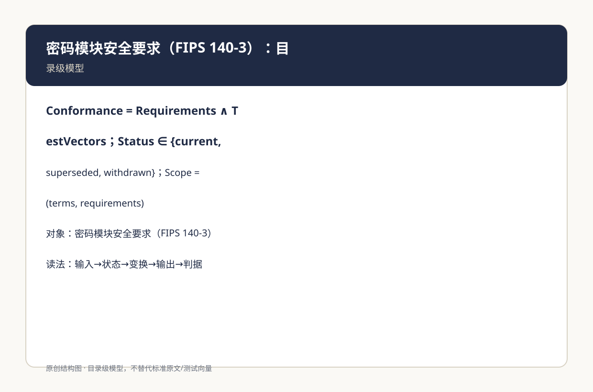

原理与机制
标准：密码模块安全要求（FIPS 140-3）（Security Requirements for Cryptographic Modules (FIPS 140-3)）。FIPS 140-3 的自我定位写在说明一节：「This standard specifies the security requirements that will be satisfied by a cryptographic module utilized within a security system protecting sensitive but unclassified information」，并把分级方式一次讲清——「The standard provides four increasing, qualitative levels of security: Level 1, Level 2, Level 3, and Level 4.」它约束的是模块本身，而不是某个算法。

为什么重要
为什么要一份模块标准：算法正确不代表实现安全，所以要求覆盖设计与运行的整条链。摘要列出范围：「These areas include cryptographic module specification; cryptographic module interfaces; roles, services, and authentication; software/firmware security; operating environment; physical security; non-invasive security; sensitive security parameter management; self-tests; life-cycle assurance; and mitigation of other attacks.」
应用与实例
适用面写在 §6：「This standard shall be used in designing and implementing cryptographic modules that Federal departments and agencies operate or are operated for them under contract.」同段给出两条出路——「Cryptographic modules that have been approved for classified use may be used in lieu of modules that have been validated against this standard.」，以及「The adoption and use of this standard is available to private and commercial organizations.」被认可的模块还须采用批准件：§10「Cryptographic modules that conform to this standard shall employ Approved security functions such as cryptographic algorithms, cryptographic key management techniques, and authentication techniques that have been approved for protecting Federal government sensitive information.」——同为联邦敏感信息的保护口径。

边界与攻击面
限度有两处可读出来。其一，它是联邦采购与验证口径，标准把用途限定在「a security system protecting sensitive but unclassified information」；§6 另给两条出路——「Cryptographic modules that have been approved for classified use may be used in lieu of modules that have been validated against this standard.」与「The adoption and use of this standard is available to private and commercial organizations.」。其二，合规与可验证被绑在一起：紧接一句说明「The Cryptographic Module Validation Program (CMVP) validates cryptographic modules to Federal Information Processing Standard (FIPS) 140-3 and other cryptography-based standards.」——验证计划面向的不止这一份标准，其效力以验证结果表达：「Cryptographic modules that are validated under the CMVP will be considered as conforming to this standard.」
历史与背景
版本关系写在标题页与说明里：标题页标注「(Supersedes FIPS PUB 140-2)」，日期行是「Federal Information Processing Standards Publication 140-3 March 22, 2019」；正文更明确「This standard supersedes FIPS 140-2, Security Requirements for Cryptographic Modules, in its entirety.」关键词一栏还把国际并行文本列出——「ISO/IEC 19790; ISO/IEC 24759」。
逐步示例与核验
形式模型与复算步骤
[S=\min_i S_i,\quad S_i\in{\text{密钥强度},\text{分组安全},\text{实现安全}}]
密码模块安全要求（FIPS 140-3）的公开参数、密钥/随机数与消息；变量说明：S 为综合安全强度；各分量取最小值，不能只看密钥位数。1.读取标准规定的密钥/分组/模式参数。2.按标准表换算等效强度。3.取最弱分量作为系统强度。边界：公式只覆盖已登记的参数与假设；参数取值、标准版本和实现细节仍以来源为准。
参考出处
- Wikipedia search entry for 密码模块安全要求（FIPS 140-3）. https://zh.wikipedia.org/w/index.php?search=%E5%AF%86%E7%A0%81%E6%A8%A1%E5%9D%97%E5%AE%89%E5%85%A8%E8%A6%81%E6%B1%82%EF%BC%88FIPS%20140-3%EF%BC%89
- Handbook of Applied Cryptography (Menezes, van Oorschot, Vanstone). https://www.cacr.math.uwaterloo.ca/hac/
- NIST FIPS 140-3: Security Requirements for Cryptographic Modules. https://csrc.nist.gov/pubs/fips/140-3/final
- Published standard/RFC for 密码模块安全要求（FIPS 140-3）. https://csrc.nist.gov/pubs/fips/140-3/final